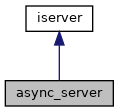

Класс асинхронного сервера More...
#include <async_server.h>
Inheritance diagram for async_server:

Collaboration diagram for async_server:
Public Member Functions | |
| async_server (bio::io_context &io_context, unsigned short port, std::shared_ptr< icore > core) | |
| Конструктор More... | |
| void | start () override |
| Метод запуска сервера More... | |
| void | stop () override |
| Метод остановки сервера More... | |
 Public Member Functions inherited from iserver Public Member Functions inherited from iserver | |
| virtual | ~iserver ()=default |
Detailed Description
Класс асинхронного сервера
Constructor & Destructor Documentation
◆ async_server()
| async_server::async_server | ( | bio::io_context & | io_context, |
| unsigned short | port, | ||
| std::shared_ptr< icore > | core | ||
| ) |
Конструктор
- Parameters
-
io_context - boost:asio context port - номер открываемого сервером порта core - ядро приложения
Member Function Documentation
◆ start()
|
overridevirtual |
Метод запуска сервера
Implements iserver.
◆ stop()
|
overridevirtual |
Метод остановки сервера
Implements iserver.
The documentation for this class was generated from the following files:
- src/async_server.h
- src/async_server.cpp